Skincare For Oily Skin
1. Cleanser
Garnier Michellar Cleansing
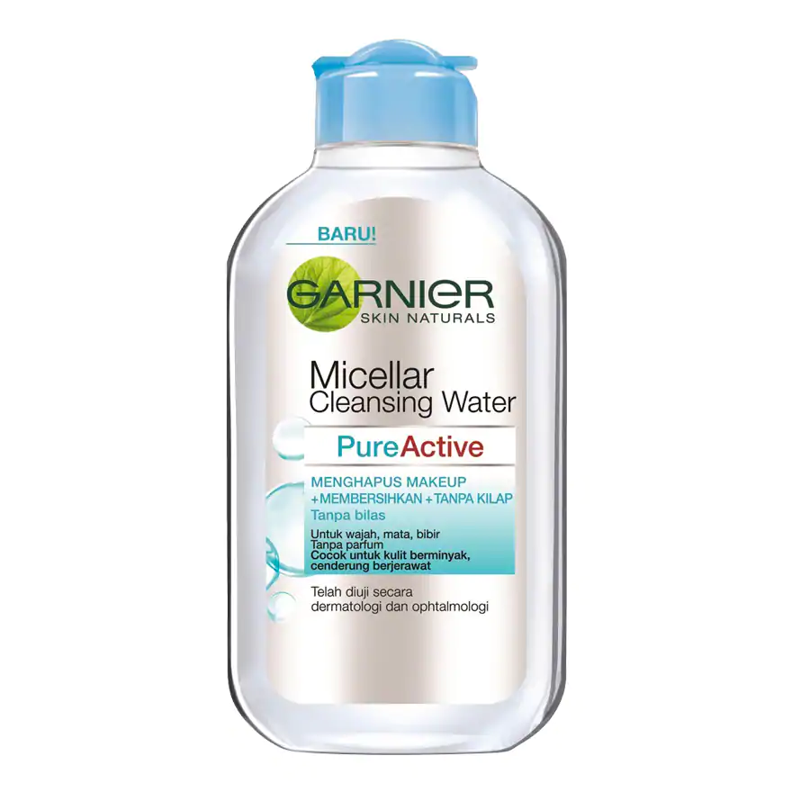Garnier Micellar Water merupakan inovasi pembersih wajah terkini dengan kandungan molekul Micelles yang mampu mengangkat kotoran dan minyak seperti magnet, tanpa perlu dibilas. Tektsturnya ringan seperti air, lembut membersihkan kotoran, makeup serta menghilangkan minyak berlebih dari wajah, mata, dan bibir tanpa menimbulkan iritasi. Diformulasikan agar tidak lengket di wajah, tidak berminyak, dan tanpa parfum: cocok untuk kulit kombinasi dan cenderung berminyak/berjerawat.
2. Facial Wash
The Body Shop Tea Tree Skin Clearing Facial Wash (250 ml)
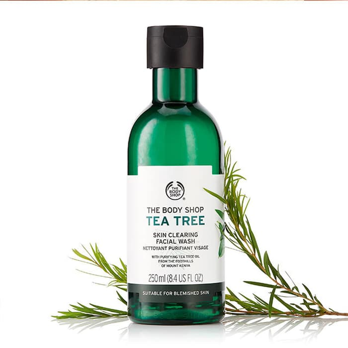Tea tree adalah bahan alami yang dikenal efektif untuk mengusir jerawat dan mencegah produksi minyak berlebih pada wajah. Selain berfungsi untuk membersihkan wajah, The Body Shop Tea Tree Skin Clearing Fash juga dapat melembutkan sekaligus membuat wajah tampak lebih cerah. Produk yang berbasis gel ini aman digunakan pada kulit, terutama bagi kamu yang memiliki kulit sensitif karena terbuat dari bahan alami. Productnation.
3. Exfoliator
St. Ives Acne Control Apricot Scrub
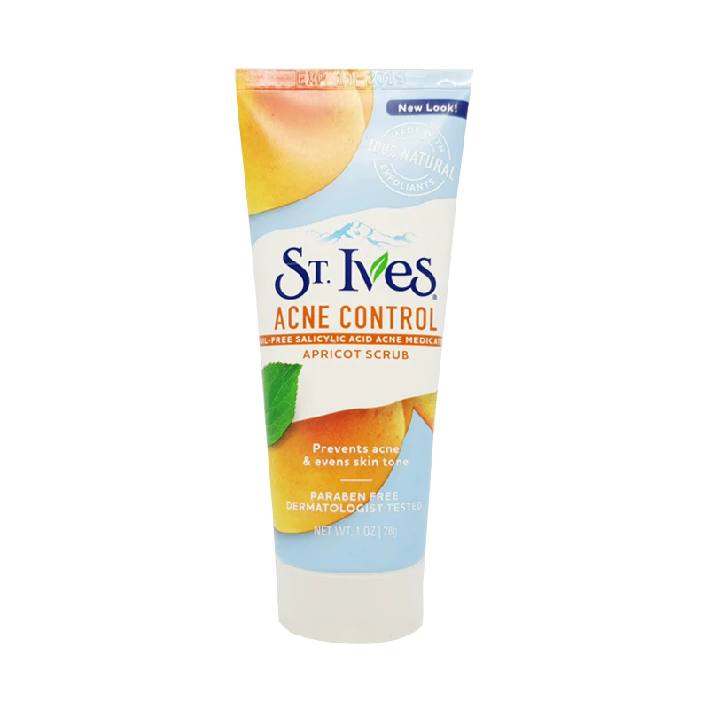Membuat wajah terlihat lebih bersih dengan kandungan salicylic acid dan oil-free based yang cocok untuk wajah berjerawat dan berminyak. Butiran scrub-nya lembut memberi efek eksfoliating yang nyaman dan membuat wajah terlihat lebih glowing.
4. Toner
Emina Witch Power Face Toner
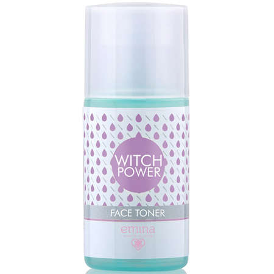Zinc Gluconate dan ekstrak Witch Hazel membantu menyegarkan dan meregulasi sekresi sebum. Cocok untuk kulit normal cenderung berminyak dan kulit berjerawat.
5. Essence
COSRX Advanced Snail 96 Mucin Power Essence
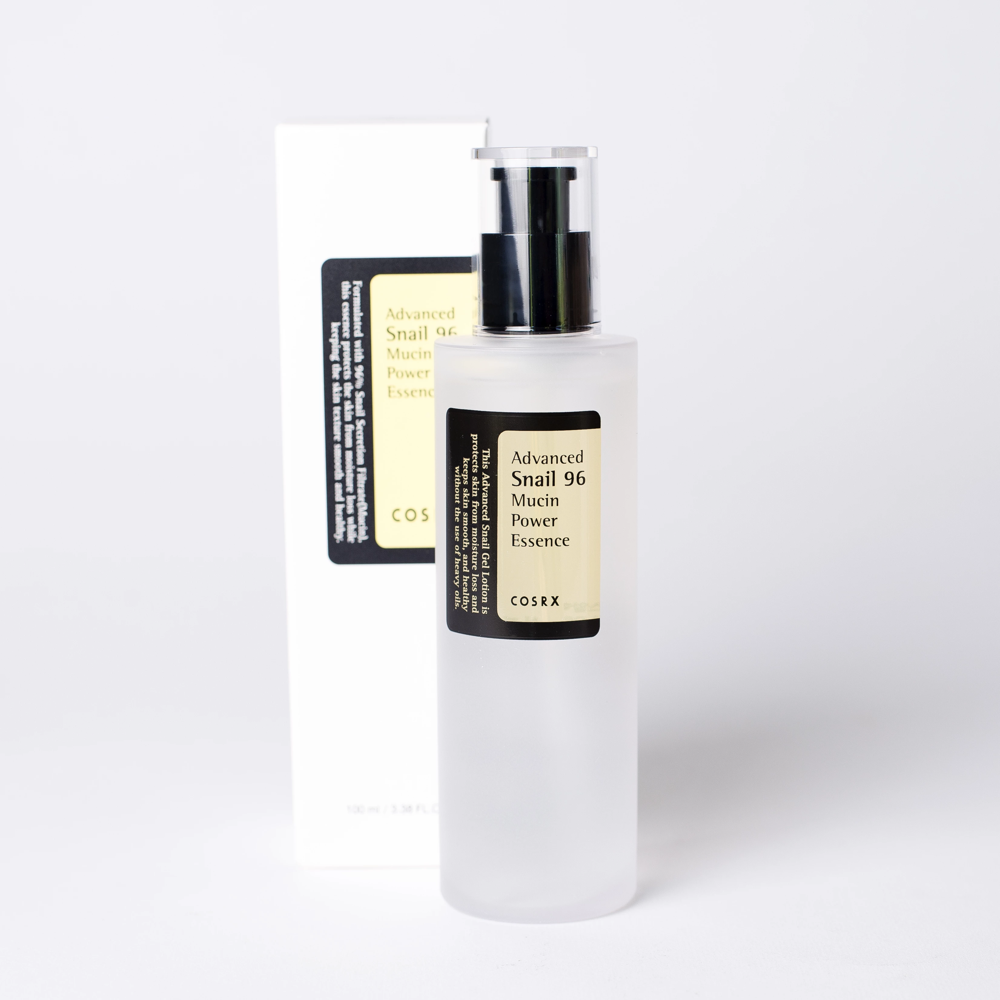Teksturnya yang cair dan bening membuat produk ini semakin mudah untuk Anda aplikasikan di kulit wajah Anda. Diformulasikan secara khusus, essence ini tidak hanya cocok untuk kulit berminyak, tetapi juga pada semua tipe kulit wajah. Bila digunakan secara teratur, produk ini dapat membuat kulit wajah Anda semakin halus. Diformulasikan dengan 96% mucin atau snail secretion filtrate yang kaya nutrisi, produk ini akan memperbaiki sel kulit Anda. Tidak hanya itu, essence ini juga dapat mengembalikan vitalitas dan kelembapan alami kulit Anda sehingga sangat cocok bila Anda menginginkan kulit wajah yang terlihat kenyal dan kencang setiap saat.
6. Serum
Klairs Vitamin C Serum
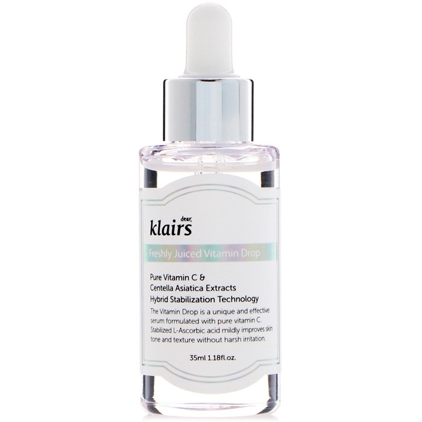Serum untuk kulit berminyak selanjutnya ialah berasal dari merek Korea, Klairs yang memiliki kandungan vitamin C murni yang dapat bekerja untuk merawat pori-pori, meremajakan kulit, serta mengontrol produksi minyak berlebih pada wajah.
7. Sheet Mask
Mediheal Tea Tree Care Solution Essential Mask
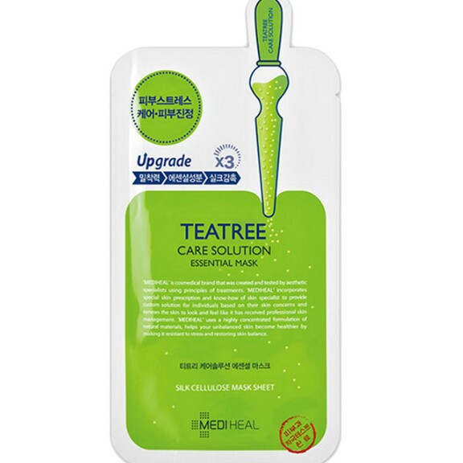Mediheal memang dikenal dengan rangkaian produk sheet mask-nya yang berkualitas dalam merawat setiap jenis kulit, salah satunya sheet mask untuk kulit berminyak milknya yang diperkaya dengan kandungan tea tree serta daun centella yang merupakan perpaduan bahan yang sempurna untuk mengontrol produksi minyak berlebih, serta mencegah kulit dari berbagai masalah kulit.
8. Moisturizer
Mizon Snail Recovery Gel Cream
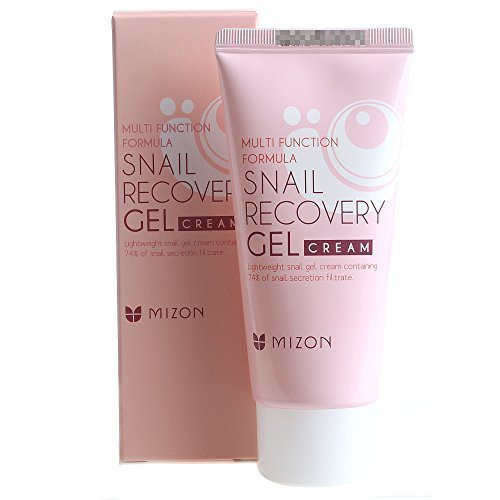Snail Recovery Gel Cream merupakan salah satu produk best seller dari Mizon. Pelembap dari Mizon ini memiliki tekstur gel dengan kandungan Hyaluronic Acidyang dapat menghidrasi kulit wajah dengan baik. Kandungan utama dari Mizon Snail Recovery Gel Cream ini adalah 74% lendir siput yang bermanfaat sebagai anti bakteri dan memiliki kadar anti-oksidan yang tinggi. Jika Anda memiliki kulit berminyak yang juga cenderung sensitif, pelembapini aman digunakan karena tidak mengandung fragrance sehingga tidak akan membuat kulit teiritasi.
Skincare For Dry Skin
1. Cleanser
Biore Cleansing Oil Makeup Remover
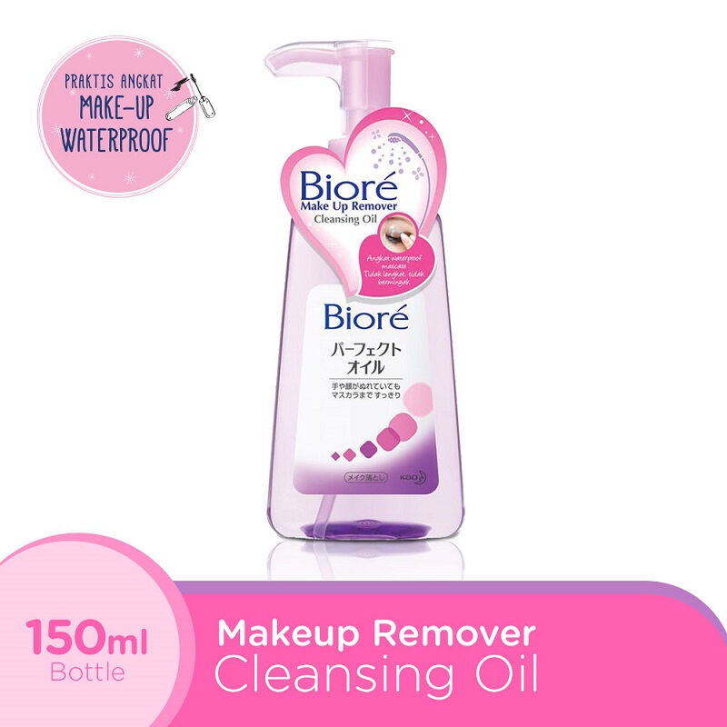Efektif Mengangkat Riasan Make up yang tertinggal di wajah dapat menyumbat pori-pori dan berakibat munculnya jerawat. Biore Cleansing Oil hadir sebagai solusi terhadap masalah tersebut. Dengan formulanya, pembersih ini mampu mengangkat lapisan riasan secara menyeluruh dan memastikan tidak ada sisa-sisa yang masih menempel. Wajah terasa lebih segar setelah dibersihkan menggunakan pembersih dari Biore ini. Berbeda dengan pembersih make up lainnya, Biore Cleansing Oil ini tidak meninggalkan lapisan minyak pada kulit Anda. Cairannya akan menjaga kadar kelembapan alami kulit sehingga wajah tidak kering, namun juga tidak menjadi berminyak.
2. Facial Wash
Cosrx Low pH Good Morning Gel Cleanser
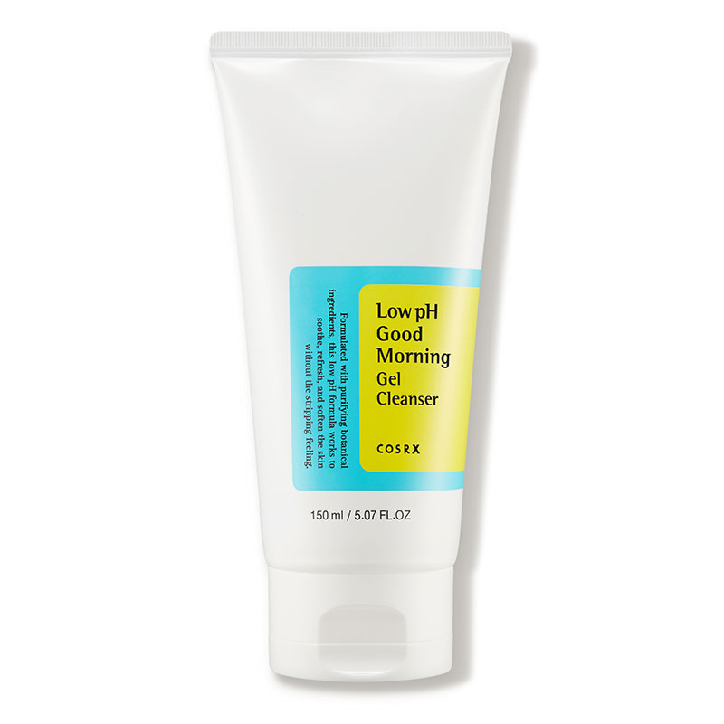COSRX Low pH Good Morning Gel Cleanser ini memiliki pH sekitar 5.0 hingga 6.0, dimana pH tersebut mirip dengan pH alami kulit kita dan diklaim dapat mengangkat kulit mati, sebum, dan menghidrasi kulit wajah. Penggunaan cleanser yang terlalu basa tidak baik untuk kulit karena dapat membuat kulit terlalu kering dan dehidrasi. Cleanser ini mengandung tea-tree oil yang berfungsi untuk mengontrol minyak diwajah dan diklaim dapat mengecilkan pori-pori. Selain itu, terdapat kandungan BHA yang berguna untuk memperbaiki tekstur wajah.
3. Exfoliator
St.Ives Gentle Smoothing Oatmeal Scrub
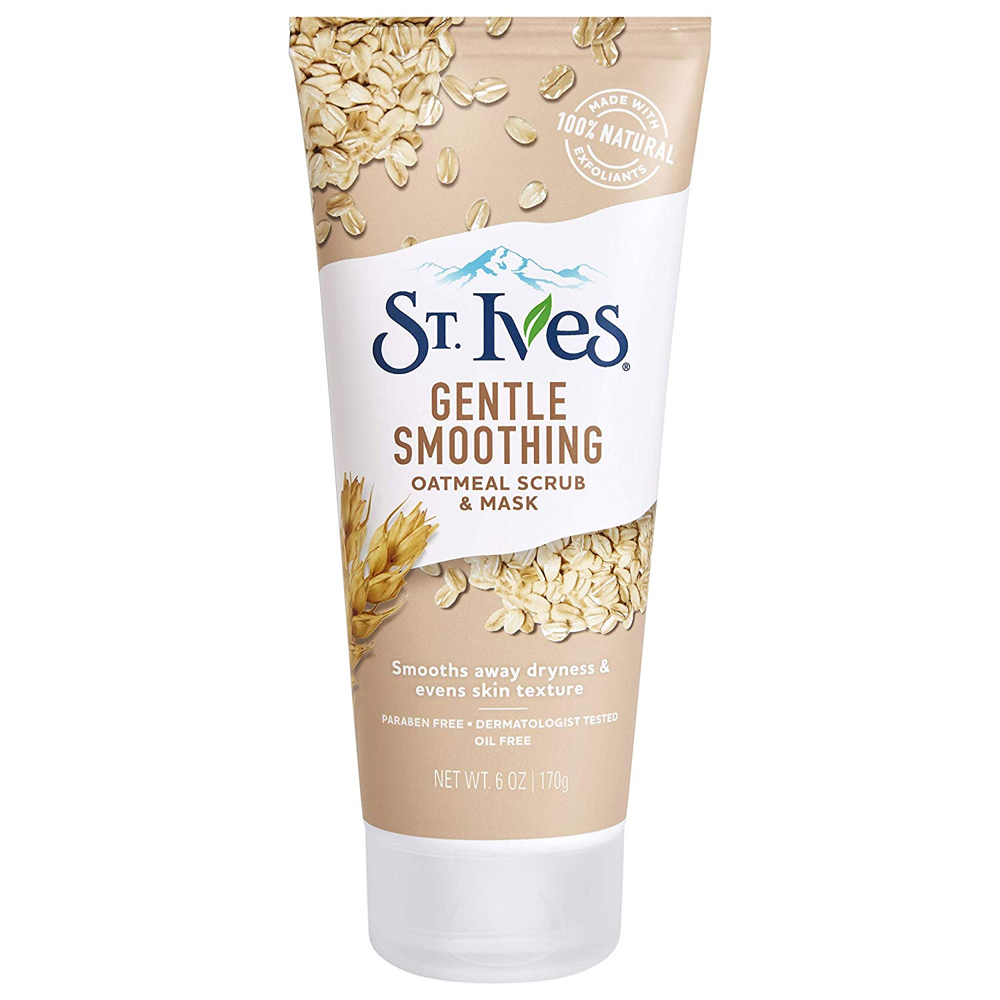Seluruh rangkaian scrub dari St. Ives memiliki indikator exfoliation factor yang memiliki rentang gentle - moderate - deep untuk menjukkan level eksfoliasi yang diberikan oleh produk tersebut. Nah, St. Ives Oatmeal Scrub + Mask memiliki exfoliation factor yang berada pada katergori gentle. Saat dikeluarkan, St. Ives memiliki tesktur creamy serupa facial wash dengan warna putih dan memiliki butiran scrub natural exfoliants berwarna cokelat yang tergolong halus. St. Ives Oatmeal Scrub + Mask memiliki wangi lembut yang tidak terasa mengganggu saat produk diaplikasikan.
4. Toner
The BodyShop Vitamin E Hydrating Toner
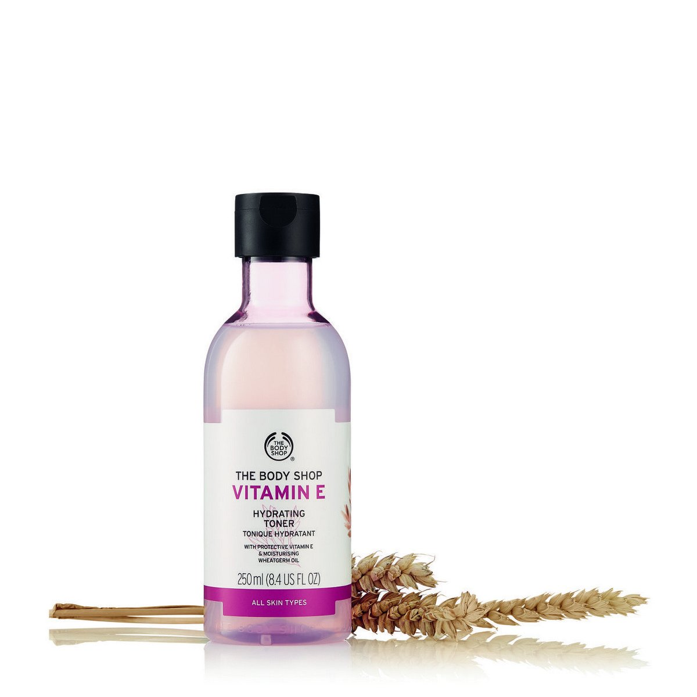Pelembab wajah dengan tekstur cream, mengandung Vitamin E untuk melembabkan dan menjaga kulit wajah halus dan lembut. Kandungan vi tamin E yang tinggi membantu menghindarkan kulit dari kekeringan dan menjaga kelembaban alaminya.
5. Essence
Nacific Phyto Niacin Whitening Essence
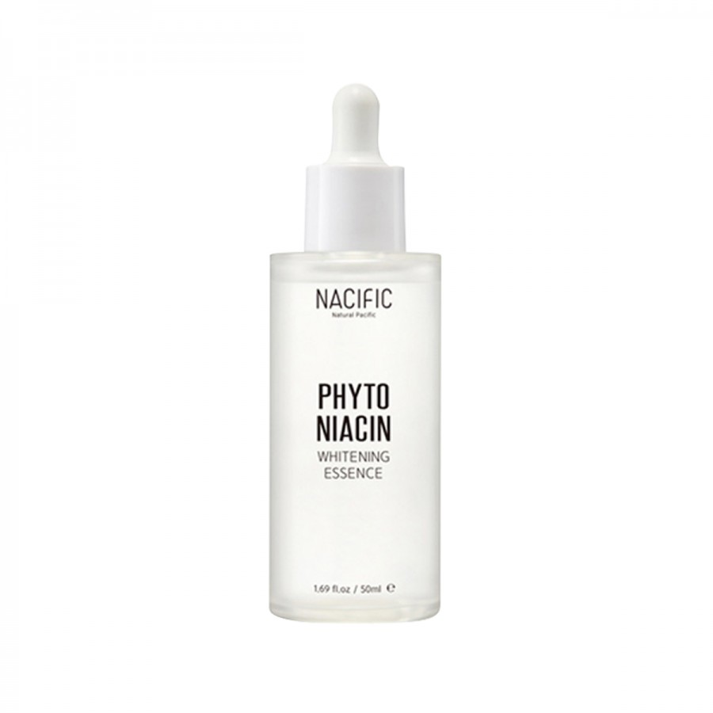Mengandung bahan-bahan untuk mencerahkan seperti Niacinamide dan Vitamin C yang diekstrak dari lemon, Morusalba Bark, dan buah Rosacanin yang memberikan vitamin yang seringkali kurang di kulit dan membantu mencapai efek sinergi untuk menjadikan kulit Anda cerah dan bercahaya. Essence pekat ini berfungsi untuk memutihkan dan memberi kelembapan pada kulit, menghilangkan noda-noda, serta mengurangi kekeringan dengan bahan-bahan yang diperoleh dari alam
6. Serum
Nacific Fresh Herb Origin Serum
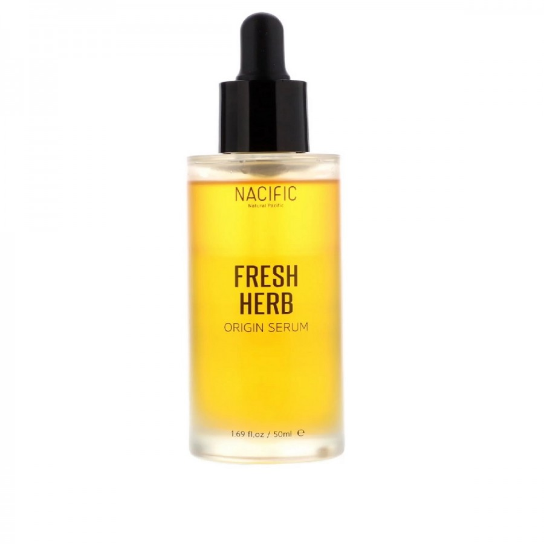Meminimalisir tampilan pori-pori besar dan kerutan halus, melembapkan, menghaluskan tekstur kulit, hingga berbagai permasalahan kulit lainnya. Menariknya lagi, serum ini juga memiliki klaim antioxidant patented ingredients yang baik untuk merangsang produksi kolagen dan pass clinical test of non-comegogenic sehingga nggak akan menyumbat pori.
7. Sheet Mask
Etude House 0.2 Therapy Air Mask
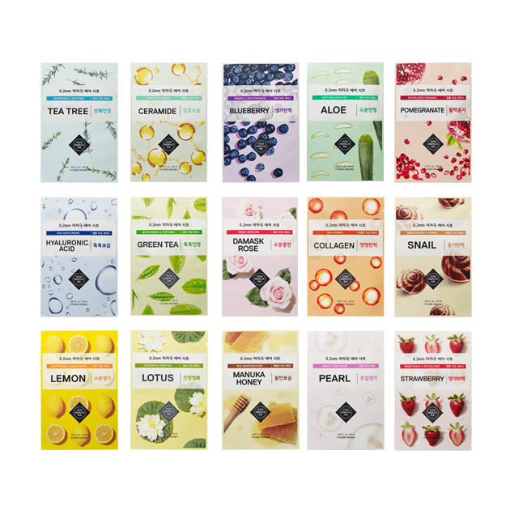Masker Wajah yang formulasikan khusus untuk kulit sensitif dari Korea yang sangat revolusioner karena dapat membantu menghilangkan kulit kering dari wajah dengan innovasi teknologi ‘0.2mm Air Mask Line Sheet’ sehingga mampu menutrisi kulit dengan kelembaban yang lebih sempurna.
8. Moisturizer
The Body Shop Vitamin E moisture cream
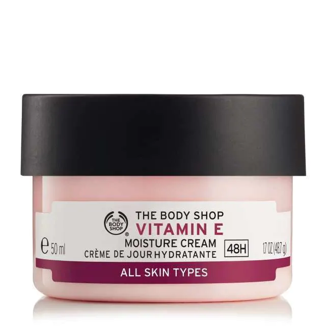Pelembab wajah dengan tekstur cream, mengandung Vitamin E untuk melembabkan dan menjaga kulit wajah halus dan lembut. Kandungan vi tamin E yang tinggi membantu menghindarkan kulit dari kekeringan dan menjaga kelembaban alaminya.